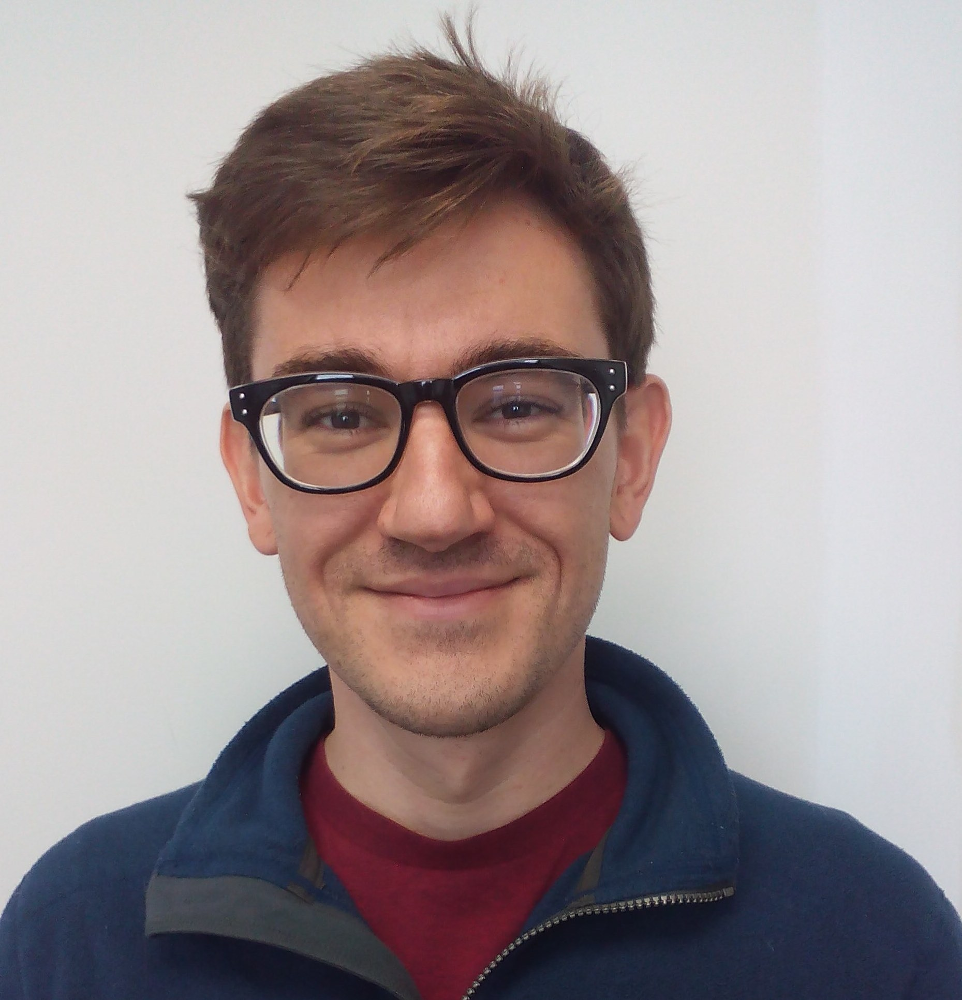

Matthew A. Hammer

As of Fall 2015, I am an assistant professor in the Department of Computer Science at University of Colorado Boulder. I am a co-director of the CU Programming Languages and Verification group (CUPLV). Research Interests(Also see my drafts and publications page).Research on programming languages provides invaluable lenses that connect human understanding with computational phenomena. In particular, I'm interested in designing PL-based abstractions for settings in which humans and computers cooperate to create and process information. Interactive computations are incremental computations that
reside in an open world, where future states are explored
collaboratively with an external user.
Common examples include spreadsheets, development environments and
media processing (graphics and sound).
Incremental computations consume and produce
information whose content or structure changes slowly over time
by small changes. In these settings, programs exploit cached
work from the past to respond more efficiently than naive
re-computation that is oblivious to past work.
Many prior programming-language-based approaches to incremental computation, including self-adjusting computation, assume a non-interactive model. As it turns out, efficient interactive computation often requires a demand-driven approach to caching past computation.
Secure multi-party computation consists of
computation performed by mutually-distrusting agents; together, they
cooperatively compute functions over their private data, while only
ever learning certain prearranged results and while remaining
otherwise oblivious to the computational steps necessary to
produce them.
Publications List ←Students
Teaching
Funded Projects
Short biographyBefore joining CU, I was a postdoc researcher working with Michael Hicks, Jeff Foster, David Van Horn and the PLUM group at the University of Maryland. As a PhD student, I was advised by Umut Acar at the University of Chicago as well as a visiting student at the Max Planck Institute for Software Systems in Kaiserslautern, Germany.As a student intern, I spent summers at IBM Research in Almaden and Intel Research in Santa Clara. I received my B.S. in 2005 from the University of Wisconsin with a major and honors in computer science. |